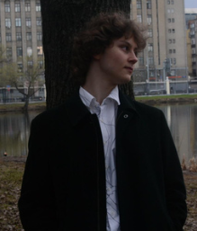

Пишу бэкенд на Python: FastAPI, PostgreSQL, Celery, интеграции с LLM. Сейчас делаю Onvy. Это сервис, который слушает смены официантов и разбирает их разговоры по стандарту ресторана.
≈30 млн ₽в год сэкономил Strauss Group на доставке до дистрибьюторов
Teboilсоздал сайт для благотворительного марафона
800+автотестов в Onvy, включая проверку миграций на живой базе
4призовых места на всероссийских чемпионатах
Мне нравится бэкенд: базы, очереди, интеграции, всё, что должно работать и не падать. Фронтенд делать не люблю, но иногда приходится.
Начинал с C++ в Московской школе программистов, учился там два года. Первой серьёзной программой была утилита, которая пряталась от диспетчера задач Windows. Пользы от неё было немного, зато я разобрался, как устроены процессы ОС.
Потом было два лета в Strauss Group. В первый раз я сделал приложение для учёта оборудования на Power Apps. Во второй посчитал логистику и написал алгоритм, после которого доставка стала обходиться компании примерно на 30 млн ₽ в год дешевле.
Сейчас я CTO в Onvy и единственный разработчик в команде. Параллельно беру заказы, езжу на кейс-чемпионаты и иногда преподаю.

СейчасCTO в OnvyЯзыкиPython, TypeScript, SQL, C++УчёбаНИЯУ МИФИ, бизнес-информатикаГородМосква
Проекты
Три последние работы. Код Onvy и Teboil закрыт, но могу показать и рассказать подробнее на созвоне.
2025 — сейчас · CTO, единственный разработчик
Сервис для ресторанов. Официант работает смену с петличным микрофоном, а Onvy расшифровывает запись, делит её на подходы к столам и проверяет каждый разговор по стандарту сети. Управляющая видит, где официант не предложил допродажу или пропустил шаг сервиса, и может сразу послушать этот момент.
Сейчас идёт пилот в сетевом ресторане в Москве. Проект в акселераторе цифровых продуктов НИЯУ МИФИ.
Что я сделал
Бэкенд на FastAPI, PostgreSQL и Celery: загрузка записей до 1 ГБ, пайплайн обработки, 34 эндпоинта, 35 таблиц.
Отдельную GPU-ноду с распознаванием речи на GigaAM. Своё распознавание выходит в 8–15 раз дешевле облачного.
Разделение речи официанта и гостя, хотя микрофон один: по громкости, тембру и проверке через LLM.
Проверку ответов модели кодом. Если цитаты нет в расшифровке, замечание не попадает в отчёт.
CI на 800+ тестов, Docker, Caddy, WireGuard до GPU-ноды. 152 коммита за четыре недели.
Стенд Teboil на благотворительном беговом марафоне. Участник проходит квиз с рулеткой на планшете, волонтёры начисляют баллы за конкурсы с телефона, таблица лидеров идёт на телевизор. Всё работает с ноутбука без интернета.
Больше всего времени ушло на скорость. На тестовой базе в 41 000 начислений вкладка с баллами открывалась 1,3 секунды, после индексов и переписанных запросов стала открываться за 3 мс. Ещё перевёл проект с SQLite на PostgreSQL и получил 184 запроса в секунду вместо 80.
TypeScript, Next.js, PostgreSQL
Свой проект · финансы
Скрипт оценивает акции, ETF и ADR по пяти факторам: прибыльность, рост, устойчивость, качество управления и ESG. Всё, что можно посчитать по формуле, считается по данным Yahoo Finance. Остальное, например скандалы вокруг компании, ищет LLM-агент.
Из лучших бумаг собирается портфель по Марковицу, потом он проходит 10 000 сценариев Монте-Карло. Если данных не хватило, скрипт так и пишет, а не подставляет ноль.
в год, или 15% бюджета на доставку до дистрибьюторов
Я работал системным аналитиком и Python-разработчиком. Сначала собрал в Power BI дашборды по всей логистике и посчитал экономику каждой доставки. На нескольких маршрутах нашлись аномалии, из-за которых компания переплачивала.
Дальше мы с логистами разложили их правила на формальные ограничения, и я написал на Python алгоритм, который распределяет грузопотоки. По сути это задача коммивояжёра, только с кучей реальных условий. В итоге расходы на доставку снизились на 15%.
Годом раньше, в первое лето там же, я сделал приложение для учёта оборудования на Power Apps и Dataverse и настроил согласование заявок в Power Automate. До этого оборудование считали вручную.
Опыт
2025 — сейчасOnvy · CTO, единственный разработчикАрхитектура, бэкенд, ML-часть с речью, инфраструктура и кабинеты. Пилот в сетевом ресторане, акселератор НИЯУ МИФИ.
Авг. — сент. 2026Заказ для Teboil · Full-stack разработчикСайт-игра для стенда Teboil на благотворительном марафоне: квиз, таблица лидеров, панель волонтёров.
Февр. — март 2026СтудСтартап · Техлид и наставникВёл 10 команд на федеральном инвестиционном конкурсе: архитектура, выбор стека, роадмапы. Команды защитили проекты перед грантовым фондом.
Июнь — авг. 2025Strauss Group · Системный аналитик, PythonДашборды по логистике и алгоритм распределения грузов. Около 30 млн ₽ экономии в год.
Янв. — март 2025Olmat Business · ПреподавательГотовил школьников к олимпиаде по бизнесу, 20 из 30 получили дипломы. Написал два бесплатных учебника по логистике и менеджменту.
Июнь — авг. 2024Strauss Group · Разработчик внутренних сервисовУчёт оборудования на Power Apps и Dataverse, согласования в Power Automate.
РаньшеМосковская школа программистовДва года C++.
Награды и конкурсы
Кейс-чемпионаты хорошо учат одному: за пару дней сделать то, что потом не стыдно показать жюри.
ПобедаКейс-чемпионат НИУ ВШЭ · суперфинал, 2025С Onvy. Я писал бэкенд: FastAPI, PostgreSQL, ffmpeg, саммари разговоров через LLM.
2 место«Время Первых», Ростех · трек беспилотных системСреди участников из 40 регионов. Считал экономику и логистику применения дронов.
2 местоDEADLINE 2025 · трек МосбиржиИгровая механика инвестирования на реальных финансовых инструментах.
3 местоDEADLINE 2026 · трек Т-БанкаОтвечал за математику: регрессии и проверку гипотез на значимость.
ФиналВСОШ по предпринимательству · 2026Финал Всероссийской олимпиады школьников.
ПолуфиналПремия «Стартех» · 2026С Onvy.
УчастиеUPenn × Wharton · инвестиционный конкурсБайесовская модель риска для балансировки портфеля и AI-агент для фундаментального анализа компаний.
Чем владею
Языки
Python, TypeScript и JavaScript, SQL, C++. Для Power Platform DAX и Power Fx, для этого сайта GLSL. Скрипты на Bash и PowerShell.